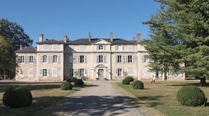
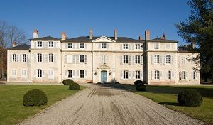
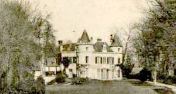
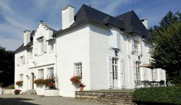
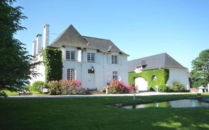

Recensement Jean-Claude Truffet
| Département | 64 — Pyrénées-Atlantiques |
| Canton | Pau |
| Commune | Gelos |
| Type d'édifice | Château |
| Période d'origine | XVIII |





A Gelos cinq châteaux dont celui de Gelos haras, le Clos Mirabel, le Beterette, l'Estefani et le Tout-y-Croit, pas d'information historique pour ces derniers. GELOS, le haras national de Gelos occupe le château, qui date de 1784. Le haras possède des voitures hippomobiles classées au titre d'objet aux M.H. Plus important édifice béarnais de la seconde moitié du XVIIIe siècle, a été bâti par Martin-Simon, baron de Duplaa (1721-1817), président à mortier au Parlement de Navarre en 1751 et propriétaire de labbaye laïque de Gelos. Fils de Bertrand, Jean Duplàa épouse Jeanne de Fréchou, possédant un fort héritage fait rentré des gens de robes, avocat au parlement de Paupuis conseiller à la même cour Jean devient maire d'Oloron en 1697, à la suite son fils Martin-Simon épouse la fille du marquis de Charitte. Ce baron eut lidée saugrenue de joindre ce château à son hôtel particulier de Pau, aujourdhui démoli, par un pont suspendu traversant la vallée et le Gave. En 1808, Napoléon, venu loger au château, décide dacheter la demeure pour y faire installer un haras en 1817 quelques jours avant sa mort Martin Simon de Duplàa vend le domaine à l'administration des haras. Voisin de Gelos, le village de Jurançon à l'ouest le manoir de CLOS -MIRABEL est un magnifique domaine de 6 ha, entre mer et montagne. Du XVIIIe siècle est situé dans un parc privé. C'est un lieu de paix, de lumière et de détente à quelques minutes du centre de Pau.
Le château de Gelos comprend un corps central élevé sur un rez-de-chaussée et un étage surmonté d'un attique, qu'encadrent deux pavillons de même hauteur, auxquels viennent s'accoler deux petits pavillons qui ne comportaient à l'origine qu'un rez-de-chaussée sur cour , au sud, la façade présente seize travées, dont une travée d'axes, aux angles soulignés de chaînages, qu'amortit un fronton triangulaire portant une inscription datant de 1791, les fenêtres du corps central, sommées d'une corniche, sont rectangulaires, celles des pavillons en saillie légèrement cintrées. Courant le long de la façade un bandeau de pierre séparant les deux premiers niveaux et une corniche sous l'attique souligne l'ensemble. L'avant corps à deux travées s'ouvre par deux portes fenêtres sur le parc. Lintérieur du château de Gélos conserve son décor dorigine, avec notamment un grand salon décoré de boiseries rocailles et une cheminée de marbre dont le trumeau est orné de paysages champêtres. Clos Mirabel de plan en U à deux niveaux recouvert d'un toit en croupes en ardoises.
Martin-Simon, baron de Duplaa
"
Le château du haras de Gelos le Clos-Mirabel grav 4 et 5, à Gelos